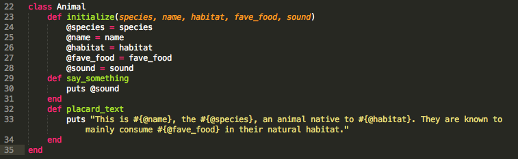
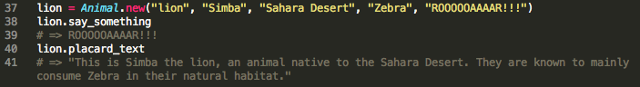

Week 5 Technical: Classing it up, Scoping the scene
August 17th, 2014
Get Classy
Ruby is known as an Object Oriented programming language, which is a fancy way for saying (almost) everything in Ruby is an object. Anything and everything you want to make your program do, you'll accomplish by asking objects to do it for you. Objects are Ruby's building blocks, but classes are an even more fundamental concept in Ruby. To make it nice and confusing, each class you create is technically an object, and "Object" is actually an example of a class!
One way to think of classes is as a "type" of object, and they are often used to represent "real" objects. Classes enable you to quickly and easily create objects of that type, giving them a few built-in attributes automatically. Instead of creating a bunch of zoo animals as separate, disconnected objects, like so:

You could first create a class called Animal, with a few built-in methods, like a way to make the animal speak, or easily print out a placard for their habitat at the zoo:
Now, it's easy to create (or "instantiate") new Animal objects by using the .new method. This method automatically calls the special "initialize" method built into the class, and stores the information we pass to it in variables:
Scope it out
Now that you're an expert in creating classes and instantiating new objects from those classes, you'll want to be sure you understand about scope. (The Well Grounded Rubyist spends a solid 14 pages on scope, but I will do my best to summarize it simply!) Scope refers to which parts of your program can use which variables. The way you name your variable and where you create the variable determines which parts of your program can use it. Types of variables include:
- Local Variables: As you might guess from their name, local variables can only be used in a localized part of your program - namely, where they are defined. If you define a variable within a method, it can only be used within that method. Local variables always start with a lowercase letter. Using underscores is more common than camel case ("my_var" over myVar, for example).
- Instance Variables: Instance variables always begin with a single @ symbol. They store information about an instance of an object. If you look back at the previous code snippets, you'll see we used instance variables to store information about our Animals, like species, name, favorite food, habitat, etc. The @ indicates that the variable applies only to the particular object it is a part of: @fav_food for the lion object is very different from @fave_food for the emu object.
- Class Variables: Class variables look similar to instance variables, but they start with two @@ symbols instead of one. Their scope is the entire class. An example of a class variable we could have set for our Animal class is @@kingdom = animalia, since all our Animal objects will naturally belong to the animal kingdom!
- Global Variables: Global variables begin with an $ symbol. As their name implies, they can be accessed throughout your program, regardless of where they are defined. If you needed to use the name of the zoo in the placards you printed for your animals, you could set a global variable of $zoo_name = "Animal Sanctuary," and you'd be able to use that variable anytime you wanted to print out the name of the zoo. From what I have read, using global variables extensively is frowned upon by expert Rubyists.
Now that you know all about class and scope, go forth and class up your programs!